MEET THE OBSERVATORY
Orbit the spacecraft. Discover its instruments. Step into real infrared light.
REAL SPHEREx DATA · ORIGINAL MASKS & PROVENANCE · SCIENTIFIC APPROVAL PENDING
A quality change applies when you next reload. Scientific pixels are unchanged.
Sound always starts muted and requires your click. These are original synthesized interface effects, not sounds recorded in space. Classic View is silent. Reduced-motion preferences disable camera travel animation.
Choose an observatory, planet or curated sky field from the destination list. Click a visible object to focus it. Drag to orbit, scroll or pinch to zoom. Arrow keys rotate; + / − zoom; Home resets; Escape returns from a focused workspace.
Three distinct environments: Solar-system positions, orbital circles and object sizes are schematic, without live ephemerides. Infrared-sky markers use actual ICRS directions on a sphere, with no measured 3D distances. Decorative stars are not a catalogue or survey coverage.
Entering an observation: the contextual scene pauses and the original scientific viewer opens. Its real dates, wavelengths, conservative quality masks, source hashes, questions and evidence exports remain available. Switch Classic View without reloading that workspace.
Only the restricted M101 area currently offers a two-date review comparison. Qualified scientific approval remains PENDING. A visual difference is not a discovery.
Reusable NASA models and textures are educational context. They do not supply SPHEREx science pixels. Models may be simplified historical visualizations. No NASA Eyes application assets were extracted.
Three.js r180: MIT · Draco: Apache-2.0 · Space Grotesk: SIL Open Font License. All runtime assets and licenses are stored locally.
JavaScript is needed for interactive scientific validation and 3D viewing.